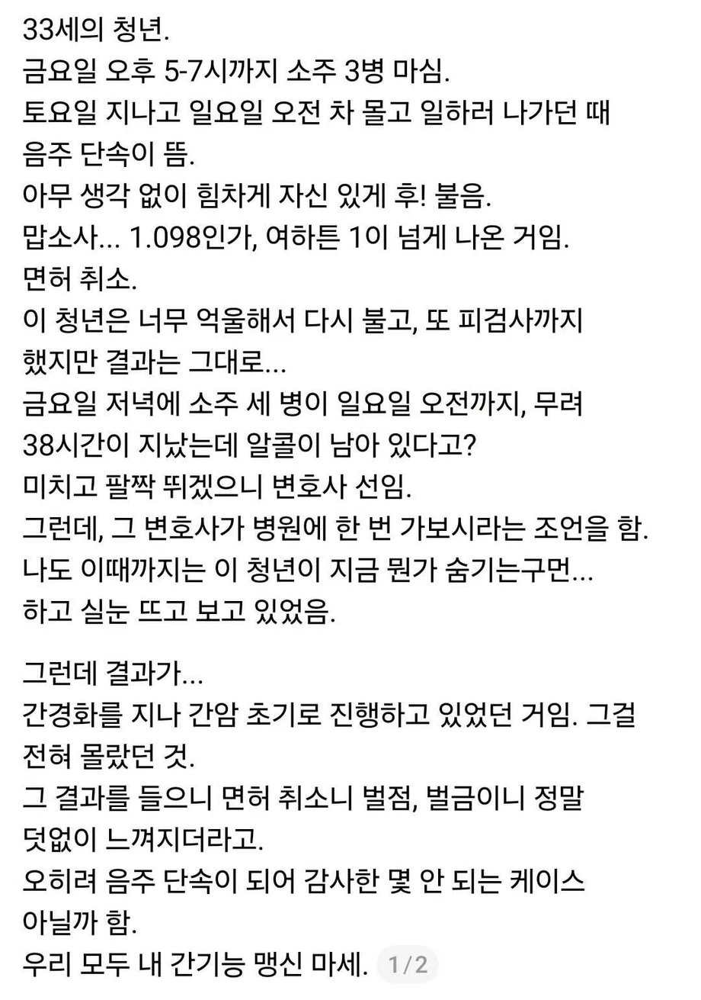

음주 단속이 행운이 된 케이스
댓글
그래도 음주단속은 안봐주지?
간이 아프다고 해독이 안되어서 음주단속에 걸린다? 흠...
체혈하면 더 높게 나온데
절대로 하지마라
술쳐먹고 운전대 잡는 새끼들이 그런걸 몰라서 체혈해달라 할까요ㅋㅋㅋㅋ
채.
채
그거 할때까지 존나게 온갖지랄해서 술깨려고 하능거임 ㅋㅋㅋ
채


개소리지 ㅋㅋㅋㅋ 혈중 알콜이 0.1인데 취기를 못 느낄리가 ㅋㅋㅋ
2시간에 3병마셨다는걸로봐선 알콜에쩔어사는 사람일 가능성이 높음.. 저러면 취한거잘못느낌
그런 사람은 없다
아무리 알콜을 달고 살아도 취한 상태와 아닌 상태를 구분 못 하진 않음
그건 몸이 정상적인 상태일때 아니야..?
간이 망가졌지 뇌가 망가졌냐
쓰레드 글을 믿을바엔
차라리 여초 글을 믿겠다
혈중 알콜 수치 0.1 이상이 면허 취소 아님??
그건 넘어간다고 쳐도…술 마시고 알콜릭 간경화 온거면 이제 수술 or 시술로 간암 지지기 및 식도정맥류 등등으로 피토하는 일만 남은 거 같은데 행운이라고 해야해…?
이야 출처도 없는 텍스트 덩어리를 퍼나르네
주작이라고 생각하는 이유
1. 기저질환 (B형간염 C형간염 등) 없는 33세 청년이 갑자기 간경화 진단? 알콜중독 수준이어도 저 나이때 지방간은 있겠지만 간경화는 안옴. 그리고 간경화 정도로 진행됐으면 여태 모르기가 정말 힘듦. 뭐 간이 침묵의 장기고 어쩌고 하는데 그건 간경화 전까지 얘기고, 이미 간경화라면 온갖 다양한 증상들이 나타나고 그걸 모르기 힘듦.
2. 간경화를 지나 간암 초기로 진행된다는 말이 이상함. 간경화가 간암으로 진행되는게 아님. 간경화가 있으면 간암 확률이 올라가는건 맞지만 둘은 별개의 질환으로 생각해야됨.
3. 간경화에 간암이 실제로 있었다고 해도, 금요일 오후 -> 일요일 아침까지 38시간이 지났는데 혈중알콜농도가 1% 넘게 나온다? 간경화라고 해서 기능을 아예 안하는건 아니라서 그렇게 알콜농도가 계속 유지될 확률은 희박함. 그리고 간기능이 마비됐다 치더라도 물먹고 소변만 봐도 알콜농도는 떨어짐. 그리고 38시간동안 혈중알콜농도가 1% 이상 유지 됐으면 이미 사망했음. 글쓴이가 0.1%를 1%로 잘못 생각했다해도, 0.1%만 돼도 그 상태로 38시간동안 유지되면 제대로 서있기도 힘듦. 그동안 아무 증상없이 멀쩡히 운전도 했다는게 말이 안됨.
4. 아무런 출처도 증거도 인증도 없이 그냥 글만 써있고, 글쓴이가 누군지도 안나와있음. 청년의 친구임? 경찰임? 변호사 사무소 직원임? 저런 일을 어케 알게된거임?